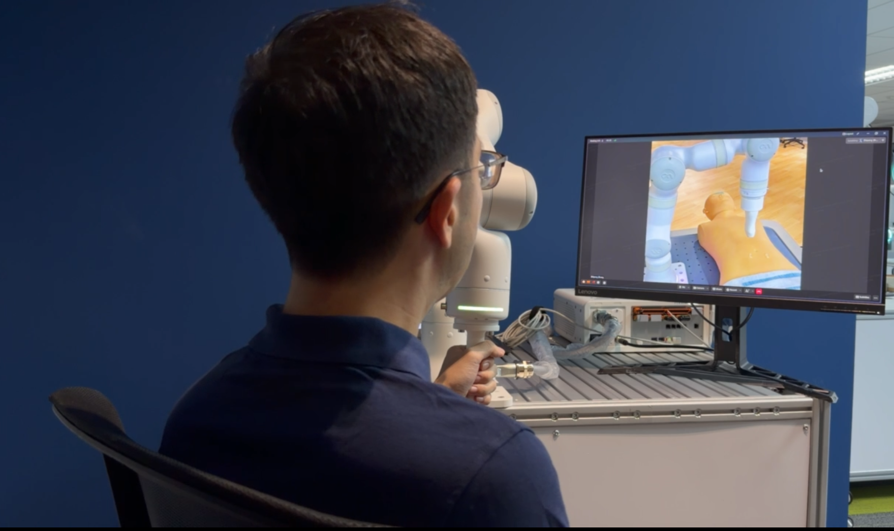
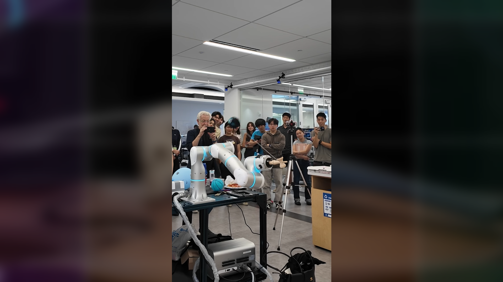
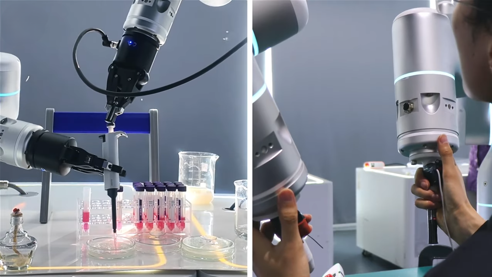

Flexiv's TDK | Teleoperation Made Simple¶
欢迎来到 Flexiv TDK（遥操作开发套件） 文档站点。本站提供用户手册、API 参考和常见问题解答，帮助你搭建并集成 TDK。
什么是 Flexiv TDK？¶
Flexiv TDK 是一套 SDK，用于基于 Flexiv 自适应机器人构建自定义的"机器人对机器人"或"设备对机器人"遥操作应用。它通过高保真感知反馈实现同步的力引导运动，并同时支持 LAN（局域网）和 WAN（广域网）连接。
TDK 在具身智能数据采集、放射医疗、危化品实验等领域拥有广泛的应用场景。
TDK 实际应用¶




🎬 Flexiv's TDK | Teleoperation Made Simple
接触作业操作基准测试¶
Flexiv TDK 已入选 Manipulation Net 插孔装配排行榜。Manipulation Net 是一个面向真实世界、规模化、任意机器人和任意时间地点的公开操作基准测试。这为 TDK 相关应用场景（包括柔顺插装、对准和力觉遥操作工作流）所需的接触作业操作能力提供了外部佐证。
核心特性¶
- 高保真感知反馈：100% 触觉反馈透明度，确保人手操作的保真度。
- 跨國家遠距離遙操作：灵活的网络配置，同时支持局域网和广域网。
- 更优的物理人机交互：主端机器人可随时改变位置或朝向；重新接合时仅映射相对运动，无绝对位姿约束。
- 可选笛卡尔约束：可沿指定方向约束运动，任务执行更快、更精确。
- 鲁棒的力/力矩保护：防止机器人和工件受损，确保接触过程中的本质安全。
快速链接¶
文档结构¶
- 用户手册：安装设置、示例和操作指导。
- API 参考：由 Doxygen 生成的 C++ API 文档。
- 常见问题：常见问题和故障排查技巧。
注：API 参考由 Doxygen 生成，并与本站一同发布在 GitHub Pages 上。